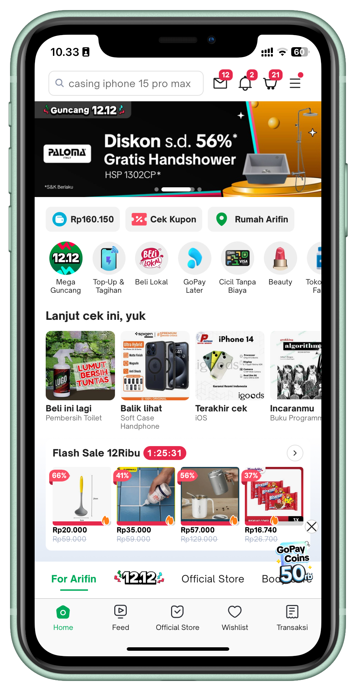

One of Indonesia's leading e-commerce platforms connecting millions of buyers and sellers. I was working at Tokopedia as an iOS Engineer, contributing to features that serve millions of users across the platform.

Engineering
Technologies and frameworks used while working on the Tokopedia iOS app.
Built UI with Texture (formerly AsyncDisplayKit), enabling highly performant, asynchronous layout and rendering — essential for Tokopedia's complex, data-dense feed and product listing screens.
Applied MVVM with Clean Architecture for clear separation between UI, business logic, and data — enabling independent testing and scalability across Tokopedia's feature-rich codebase.
Used Moya for REST-based API calls with a type-safe endpoint layer. Adopted GraphQL for flexible, efficient data fetching — reducing over-fetching on complex product and feed queries.
RxSwift was the primary reactive framework for data binding, event streams, and ViewModel state management — coordinating complex async flows across features like search, cart, and checkout.
Followed Test-Driven Development (TDD) as the standard engineering practice. Unit tests covered ViewModels, Use Cases, and data-layer logic — ensuring correctness and preventing regressions in a high-traffic production app.
Structure
Clean layer separation allows Tokopedia's large engineering team to work independently and ship features safely at scale.
Texture (ASDisplayNode) Views & ViewModels. RxSwift-driven state, no business logic.
Use Cases & Entities. Pure Swift — no framework dependencies. Fully unit-testable.
Repositories, Moya REST + GraphQL services. Maps response DTOs to domain models.
Complete Stack
My Role
I was working at Tokopedia as an iOS Engineer, contributing to features used by millions of users daily. Key work included building performant UI with Texture (AsyncDisplayKit), implementing GraphQL queries for efficient data loading, managing reactive data flows with RxSwift, and maintaining quality through TDD and unit testing.